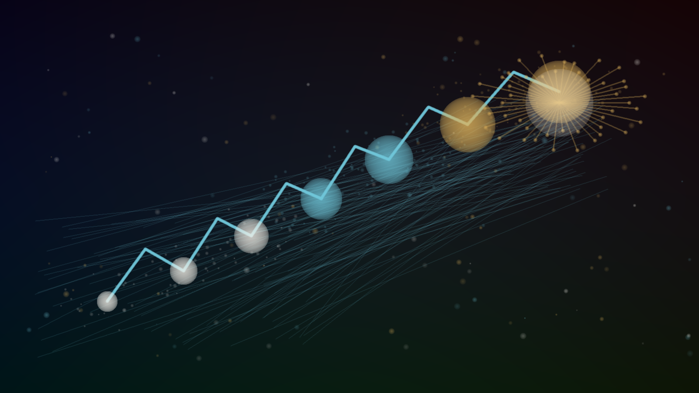
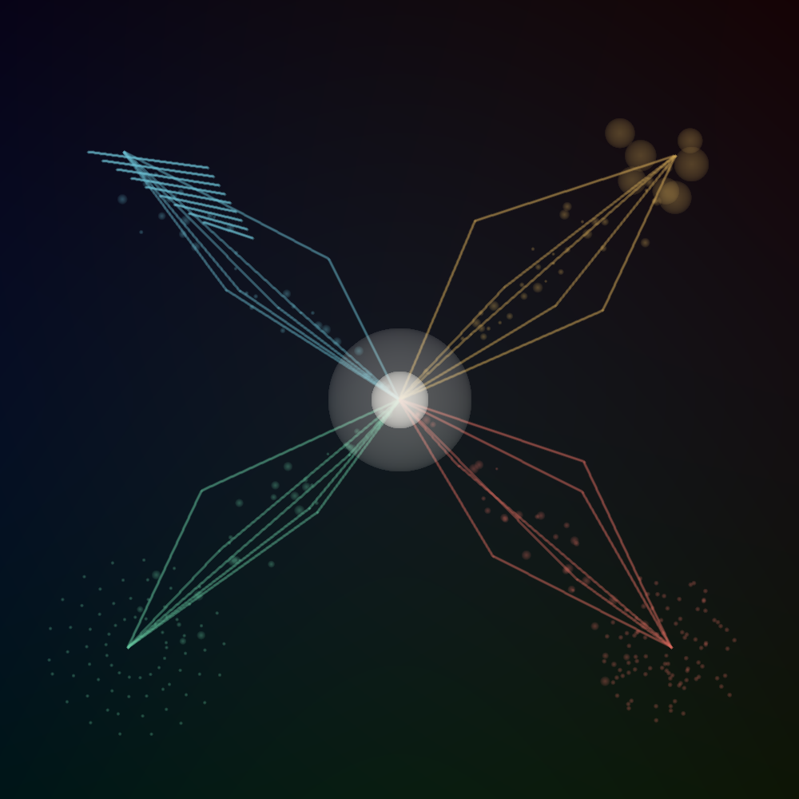
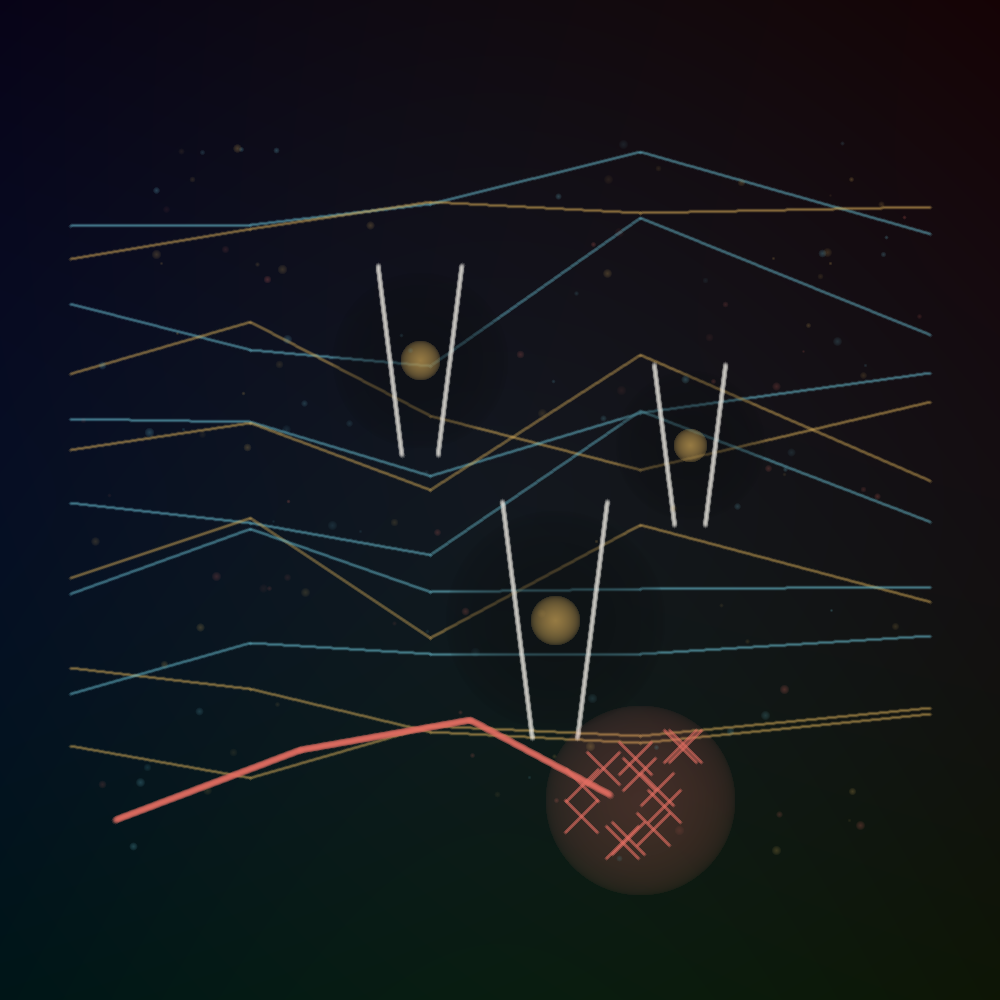

Paper Trace Atlas
Loading trace

Continuum
Human-level systems rising toward a superintelligent horizon.

Pathways
Scaling, paradigm shifts, recursive improvement, and collectives.

Friction
Bottlenecks, uncertainty, and the rejected single-step-change frame.